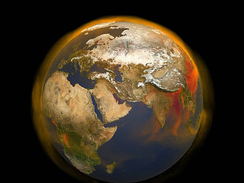

THE BLUE PLANET
Earth is the third planet from the Sun and is the largest of the terrestrial planets. The Earth is the only planet in our solar system not to be named after a Greek or Roman deity. The Earth was formed approximately 4.54 billion years ago and is the only known planet to support life.


TOP FACTS ABOUT OUR OWN PLANET :
- The Earth’s rotation is gradually slowing.
- The Earth was once believed to be the centre of the universe.
- Earth has a powerful magnetic field.
- There is only one natural satellite of the planet Earth.
- The Earth is the densest planet in the Solar System.
- Earth is the only planet not named after a god.
This deceleration is happening almost imperceptibly, at approximately 17 milliseconds per hundred years, although the rate at which it occurs is not perfectly uniform. This has the effect of lengthening our days, but it happens so slowly that it could be as much as 140 million years before the length of a day will have increased to 25 hours.
Due to the apparent movements of the Sun and planets in relation to their viewpoint, ancient scientists insisted that the Earth remained static, whilst other celestial bodies travelled in circular orbits around it. Eventually, the view that the Sun was at the centre of the universe was postulated by Copernicus, though this is also not the case.
This phenomenon is caused by the nickel-iron core of the planet, coupled with its rapid rotation. This field protects the Earth from the effects of solar wind.
As a percentage of the size of the body it orbits, the Moon is the largest satellite of any planet in our solar system. In real terms, however, it is only the fifth largest natural satellite.
This varies according to the part of the planet; for example, the metallic core is denser than the crust. The average density of the Earth is approximately 5.52 grams per cubic centimetre.
The other seven planets in our solar system are all named after Roman gods or goddesses. Although only Mercury, Venus, Mars, Jupiter and Saturn were named during ancient times, because they were visible to the naked eye, the Roman method of naming planets was retained after the discovery of Uranus and Neptune.